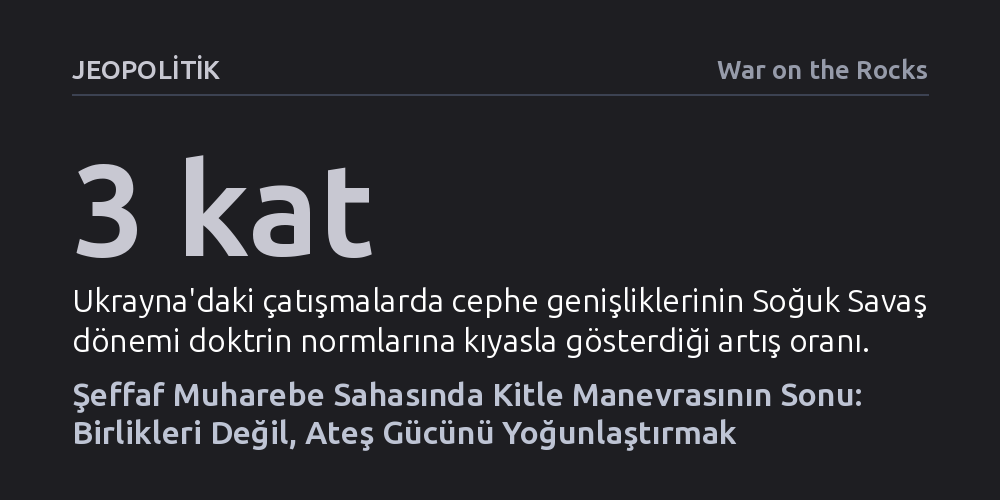

JEOPOLITIK · War on the Rocks · 2026-10-20
İHA'lar ve hassas füzelerin yarattığı şeffaf savaş sahası, kitle halindeki mekanize birlik manevrasını imkânsız kılarak savaşı mevzi çatışmasına dönüştürdü. Orduların hayatta kalabilmek için birliklerini dağıtması, doğrudan temas yerine ayrık unsurların ateş gücünü hedefte birleştiren yeni bir yapıya geçmesi gerekiyor.
Geleceğin savaşlarında başarının tank kütleleriyle cephe yarmaktan değil, dağılmış unsurların İHA ve hassas topçu ağlarını hedef üzerinde senkronize edebilme hızından geçtiğini gösteriyor.

1940 yılının Mayıs ayında General Heinz Guderian komutasındaki XIX. Zırhlı Kolordu, Fransızların geçilemez saydığı Ardenler Ormanı’nı aşarak Sedan kentine ulaştığında, modern askeri tarihin en ünlü manevra örneğini sergilemişti. Almanlar, Fransız savunmasını yarmak için tüm kuvvetlerini daracık bir hatta yığmış; üç zırhlı tümeni sadece on kilometrelik bir cephede toplamış ve Meuse Nehri geçişini üç kilometrelik bir alana sıkıştırmıştı. Topçuların gerideki trafik tıkanıklığında kalmasını ise Luftwaffe, sadece dört kilometrelik bir hatta 1.200'den fazla sorti yaparak telafi etmişti. O dönemde kuvveti tek bir noktada toplamak (Schwerpunkt), düşman cephesini parçalamanın ve operasyonel derinliğe hızla akmanın anahtarıydı.
Aradan geçen seksen yılı aşkın sürenin ardından, Rus-Ukrayna Savaşı kuvvet yığmanın artık bir zafer reçetesi değil, tam aksine ölümcül bir hedef haline geldiğini kanıtladı. 2022 ilkbaharında Rus ordusunun Siverskyi Donets Nehri'ni geçme girişimi, toplanan birliklerin hassas topçu ve İHA gözetlemesi altında imha edilmesiyle sonuçlandı. Benzer şekilde Herson cephesinde, Dinyeper Nehri'nin batısında mevzilenen 20 ila 30 Rus tabur taktik grubu, tıpkı Sedan'daki Almanlar gibi nehir üzerindeki üç köprüye bağımlıydı. Ancak Ukrayna güçleri HIMARS roketleriyle bu köprüleri ve dubaları peş peşe kullanılamaz hale getirince, Rus birliklerinin lojistik omurgası kırıldı ve aylar süren tecrit sonucunda Rusya nehrin doğusuna çekilmek zorunda kaldı.
Sedan ile Herson arasındaki bu keskin tezat, savaşın doğasındaki devasa dönüşümü özetliyor: 1940'ta kuvvetleri tek bir hatta yığmak cepheyi yarıp lojistiği arkadan beslemeyi mümkün kılarken, günümüzün muharebe sahasında tek bir noktada toplanmak imha edilmeyi beklemekten farksızdır.
Muharebe sahasındaki şeffaflık, yani sensörler, uydular ve keşif İHA'larının yarattığı kesintisiz gözetleme ağı, doğrudan temas çatışmalarını kademeli olarak geri plana itti. Artık muharebe gücü doğrudan ateşle değil, kilometrelerce uzaktan yönlendirilen dolaylı ve hassas ateş sistemleriyle sahaya yansıtılıyor. Bu şeffaflık mutlak olmasa da hava koşulları ve elektronik harp önlemleriyle sadece zayıflatılabiliyor, tamamen körleştirilemiyor. Sonuç olarak, zırhlı araç ve asker kümelerinin hayatta kalma şansı dramatik şekilde azaldı; cephe derinlemesine genişlerken birlikler hayatta kalabilmek için tüm sahaya dağılmak zorunda kaldı.
Ancak sahaya dağılmak tek başına zayiatı önlemeye yetmiyor. Geleneksel güdümsüz alan mühimmatları yoğunlaşmış birliklere karşı etkiliyken, birinci şahıs görüşlü (FPV) kamikaze dronlar ve hassas füzeler tekil hedefleri bile doğrudan vurabiliyor. Ukrayna savaşının ilk evresinde keşif İHA'larıyla desteklenen Rus topçu üstünlüğü Ukrayna birliklerini dağılmaya zorlamıştı. Bugün ise ucuz FPV dronların kitlesel hassas ateş gücüne dönüşmesi, tek başına dağılmış birliklerin de korumasız kaldığı yeni bir gerçeklik yarattı.
Dolayısıyla günümüz ordularının önündeki asıl mesele, dağılma ile yoğunlaşma arasındaki doğru dengeyi kurmaktır. Bağımsız hareket edebilecek en küçük askeri birimin büyüklüğünü artık elindeki personel veya araç sayısı değil; elektronik harp, hava savunması ve sensör örtüsüyle kurabildiği çok katmanlı savunma kalkanı belirliyor.
19. yüzyılın büyük stratejisti Helmuth von Moltke, ordusunu yan yana ilerleyen bağımsız kolordulara ayırarak lojistiği rahatlatmış, hareket kabiliyetini artırmış ve muharebe anında esnek biçimde birleşmeyi sağlamıştı. Moltke'nin 'Ayrı yürü, birlikte vur' düsturu, günümüzün şeffaf savaş alanında yepyeni bir anlam kazandı. Bugün bu ilke geniş çaplı bir operasyonel yarma yapmaktan ziyade, sahaya dağılmış küçük birliklerin hedef üzerinde geçici ve ani bir ateş üstünlüğü kurabilmesini ifade ediyor.
Bir hedefe taarruz edebilmek için yalnızca birlikleri korumak yetmiyor; düşmanın komuta-kontrol, gözetleme ve ateş unsurlarından oluşan öldürme zincirini aktif biçimde baskılamak gerekiyor. Günümüzde İHA'lar ve hassas roketlerle düşman savunma ağında açılan geçici baskılama pencereleri, Birinci Dünya Savaşı'ndaki yürüyen baraj ateşlerinin modern bir benzeri gibi işlev görüyor. Taarruz birlikleri ancak bu ateş kalkanının arkasında hedefe doğru hızla toplanıp ardından tekrar dağılmak zorunda kalıyor.
Bu dinamik, geleneksel askeri anlayışın vazgeçilmez saydığı bazı kabulleri de sarsıyor. Manevra savaşının temel direği olan görev tipi komuta (emir komutada inisiyatif esnekliği), ateş gücünün anlık ve kusursuz bir senkronizasyon gerektirmesi nedeniyle yerini daha sıkı eşgüdümlü, merkezi planlamaya bırakmak zorunda kalıyor. Açılan fırsat penceresi dakikalarla sınırlı olduğunda, farklı kademelerdeki sensör ve ateş unsurlarının mükemmel bir uyumla birleşmesi şart hale geliyor.
Sensörlerin her hareketi anında tespit ettiği ve ateş gücünün saniyeler içinde karşılık verdiği bir ortamda, operasyonel olarak kanatlardan kuşatma yapılabilecek açık alanlar neredeyse tamamen ortadan kalktı. Bu durum birlikleri kaçınılmaz olarak cepheden taarruzlara zorluyor ve taarruzlar daha derinliğe ulaşamadan tükeniyor. Böylece manevra savaşı yerini kesintisiz bir mevzi harbine bırakıyor. Bu cepheyi yarmak için gereken devasa kuvvet ve lojistik yığınağı ise tam da bu gözetleme ağı yüzünden oluşturulamıyor; askeri muhakeme adeta bir kısırdöngüye giriyor.
Ukrayna savaşında yaşananlar bu tablonun İkinci Dünya Savaşı'nın derin zırhlı yarmalarından ziyade, Birinci Dünya Savaşı'nın 'ısır ve tut' taktiklerine çok daha yakın olduğunu gösteriyor. Büyük ve kesin sonuçlu bir yarma aramak yerine, hassas ateş planlamasıyla sınırlı ve tanımlı bir mevzi ele geçiriliyor, ardından gelen karşı taarruz püskürtülerek arazi elde tutuluyor. Ukrayna'nın 2022 Harkiv ve 2024 Kursk harekâtları gibi istisnai yarmalar ise ancak Rus savunma hatlarının seyreltildiği ve sensör-ateş ağının zayıf kaldığı bölgelerde mümkün olabildi.
Savunma ağlarının tahkim edildiği yerlerde her ilerleme, düşmanın hızla toparlanan karşı ateş ağı tarafından durduruluyor. Dolayısıyla tankların Birinci Dünya Savaşı sonrasındaki çıkmazı hız ve zırhla aşması gibi, günümüz ordularının da savunma ağını yeniden kurulma hızından daha çabuk felç edecek yeni bir sürat ve baskılama kabiliyetine kavuşması gerekiyor.
Soğuk Savaş normlarına kıyasla cephe genişliklerinin en az üç katına çıktığı günümüz muharebelerinde, orduların mevcut mevcudu ise tam aksine ciddi biçimde küçüldü. Bu durum kitleye dayalı ordu modellerinden, etkilerin bileşimine dayalı yeni bir teşkilatlanmaya geçilmesini zorunlu kılıyor. Tarihte Alman zırhlı tümenlerinin çağın gereklerine göre dengelenmiş birleşik kıt'a yapıları olması gibi, bugünün modern tugaylarının da baştan tasarlanması gerekiyor.
Mevcut NATO ağır tugayları genellikle üç ila dört manevra taburuna karşılık yalnızca tek bir topçu taburuna sahip olacak şekilde yapılandırılmıştır ve halen doğrudan ateşle düşmana yaklaşma doktrinini esas almaktadır. Oysa Rus ve Çin birleşik tugayları çok daha fazla organik topçu, hava savunma ve elektronik harp birimi barındırıyor. Dahası, Ukrayna tugayları bünyelerinde bir veya iki özel İHA taburu bulundururken, Rusya da Rubicon gibi merkezi elit İHA merkezleriyle cephede esnek ateş yoğunlaşması sağlıyor.
NATO'nun bu yapısal açığı kapatabilmesi için doğrudan temas birliklerinin ağırlığını azaltıp, derinlikteki hedefleri baskılayacak sensör, kamikaze İHA ve topçu unsurlarını tugay seviyesine organik olarak eklemesi gerekiyor. Zira geleceğin muharebe gücü doğrudan çarpışan zırhlı araç kitlelerinden değil; uzaktan ateş açabilen, istihbaratı anında vuruşa dönüştüren hassas vuruş ağlarından doğuyor.